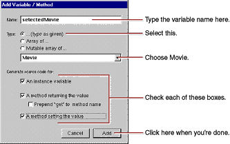
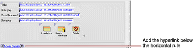
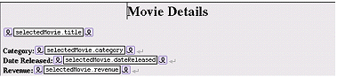

| PATH |

The MovieDetails page shows you the detailed information about a movie you select in the Main page. For this to work, the Main page has to tell the MovieDetails page which movie the user selected. The MovieDetails page keeps track of the selected movie in its own instance variable. In this section, you'll
In the sections following this one, you'll extend the MovieDetails page to display movie roles and the starring actors.
MovieDetails.wo,
in WebObjects Builder.Now, in the MovieDetails component, create a variable that
holds the application's selected movie. Later on, you'll add
code to the Main.java class
that assigns Main's selected movie to this variable.

Movie isn't actually a class; it's an entity. It's listed in the combo box as a type along with entries for all the entities in your model. When you choose an entity as the type for your variable, WebObjects Builder recognizes that the variable is an enterprise object. Using information in the model, WebObjects Builder can determine the entity's corresponding enterprise object class and the properties of that class.
To get to the MovieDetails page from the Main page, users
use a hyperlink. Clicking the hyperlink should set MovieDetail's selectedMovie variable
and then open the MovieDetails page.

showDetails action
to the hyperlink's action attribute.showDetails action
in Main.java to look
like the following: public MovieDetails showDetails() {
MovieDetails nextPage =
(MovieDetails)pageWithName("MovieDetails");
// Initialize your component here
EOEnterpriseObject selection =
(EOEnterpriseObject)movieDisplayGroup.selectedObject();
nextPage.setSelectedMovie(selection);
return nextPage;
}This
method creates the MovieDetails page and then invokes its setSelectedMovie method
with the movie that's selected in the Main page. The display group
method selectedObject returns
its selected object, which, in the Main component, is set when a user
clicks a movie title hyperlink.
Now lay out the user interface for MovieDetails. When you're done, your component should look like the following:

Recall that to create a top-level heading, you type the text of the heading, select the text, click the button to add a heading element around the text, and then use the Inspector to set the heading's level, as you did in "Using the Inspector".
This adds a new level-1 heading element around the string. The MovieDetails page will show the title of the selected movie in this heading.
selectedMovie.title to
the value attribute of
the first string element (the one in the heading).String elements have dateformat and numberformat attributes
just like text field elements. Create bindings for the Date Released
and Revenue strings so that dateReleased and revenue values
are displayed the way they are in the Main page.
Now add a hyperlink to the MovieDetails page so users can navigate back to the Main page from MovieDetails.
pageName attribute
to the text (including the quotes) "Main". You can select
"Main" from the combo box in the inspector's binding column.Recall
that the pageName attribute
is a mechanism for navigating to another page without writing code.
By setting the attribute to "Main", you're telling the application to
open the MovieSearch page when the hyperlink is clicked.
Be sure that all your project's files are saved (including the components in WebObjects Builder), and build and run your application. In the Main page, select a movie and click the Movie Details link. The MovieDetails page should display all the movie's information.
© 2001 Apple Computer, Inc.